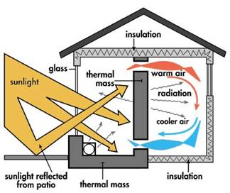
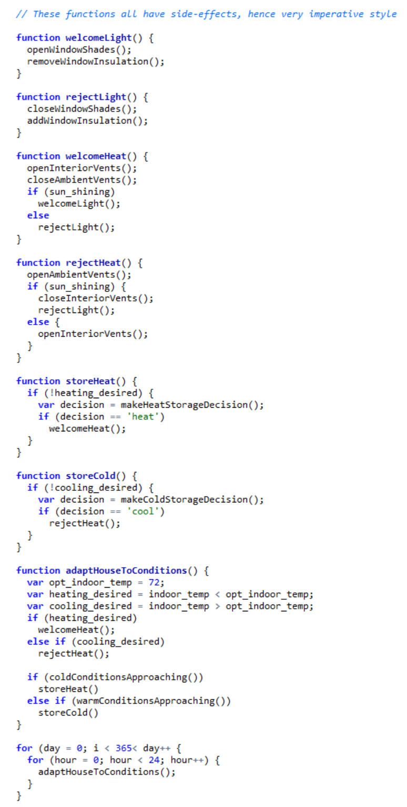
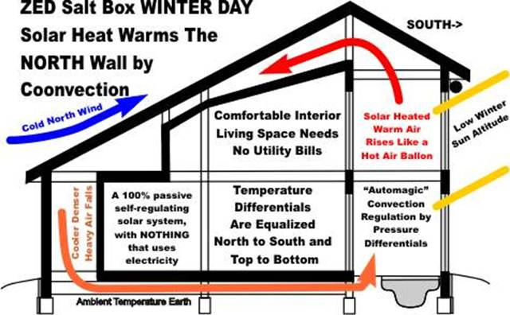
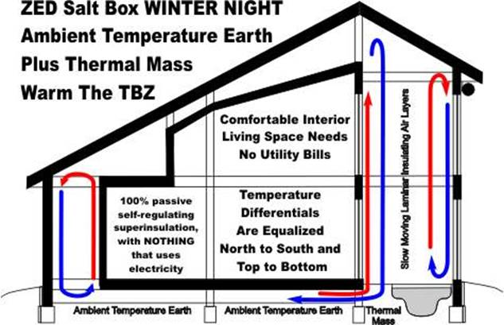
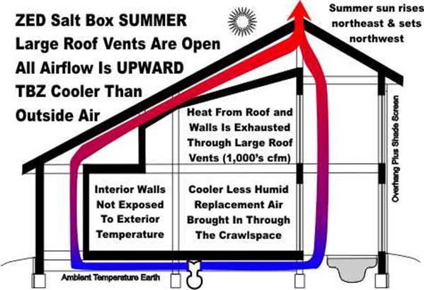
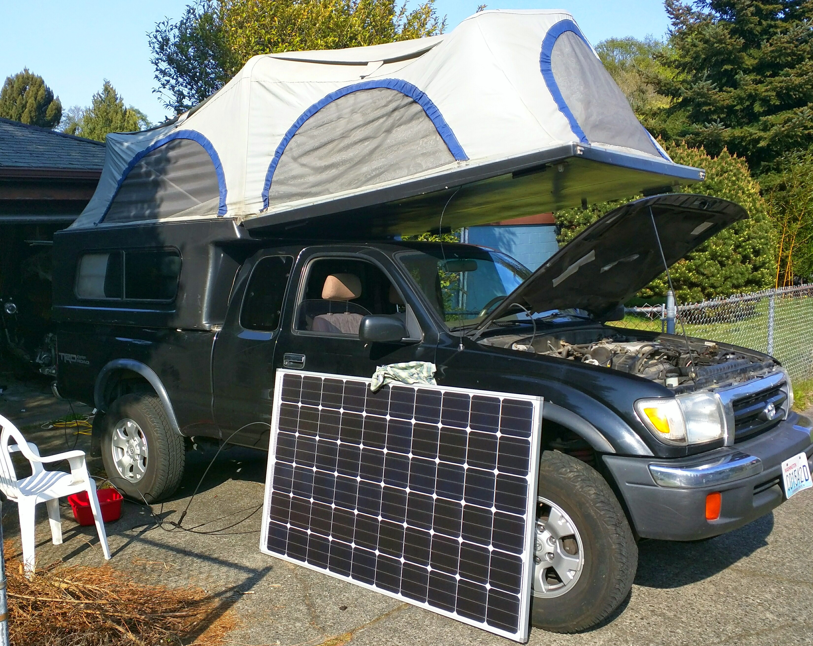
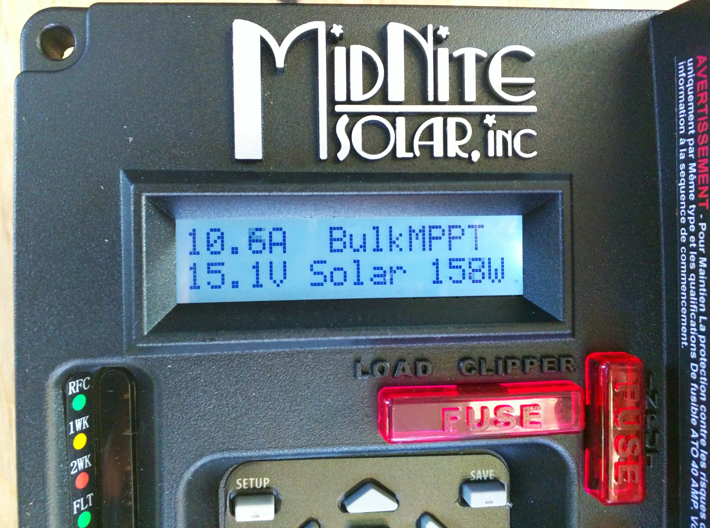

class: center, middle # Passive Solar and Compost Power ##### CSNW Annual Meeting 2015 ##### Colorado Springs, CO [Presentation Source Repo](https://github.com/benracine/energy-simplicity) <br>  --- # Passive Solar Home **Form** A passive solar home is a physical object that is the result of a construction process that takes resources and creates a space with conditions that someone desires to dwell in. ```javascript var wood = {'name': 'wood', 'quantity': 'a smidge', 'cost': 'more than ever'}; var glass = {'name': 'glass', 'quantity': 'a smidge', 'cost': 'get a loan'}; var insulation = { 'name': 'insulation', 'quantity': 'enough to get R-25 in the walls and R-50 in the ceiling', 'cost': '$$$' }; var labor = {...}; var resources = [wood, glass, insulation, labor]; var passive_solar_home = (function constructHome(res) { return buildStuff(res); })(resources); ``` --- # Passive Solar Home **Form** While a fully optimized passive solar house is a super complex topic, a few key traits do seem to surface for most sites and geolocations. - Highly insulated (minimal windows) west, polar, and east walls and roofs. - Equator-side light collection and storage (thermal mass) features. - Extending the building dimension along the east/west axis. - Room placement to match daily use with daily temperature profiles. - Roof-angle glass is generally considered a "no-no". --- # Passive Solar Home **Form**: Example <img width="800" height="480" src="http://ecobrooklyn.com/wp-content/uploads/2013/04/earthship-schematic-1.jpeg"></img> --- # Passive Solar Home **Function** The ambient environmental conditions are a multivariate time series: <code class="javascript remark-code" style="font-size: 12px;"> <div class="remark-code-line">var amb_cond1 = {'time': 'early', 'temp': '34F', '% hmdty': '99%', 'precip': 'rain', 'UV': 0};</div> <div class="remark-code-line">var amb_cond2 = {'time': 'middle', 'temp': '33F', '% hmdty': '99%', 'precip': 'rain', 'UV': 0};</div> <div class="remark-code-line">var amb_cond3 = {'time': 'late', 'temp': '32F', '% hmdty': '99%', 'precip': 'snow', 'UV': 0};</div> <div class="remark-code-line">var ambient_conditions = [amb_cond1, amb_cond2, amb_cond3];</div> </code> As are the desired interior conditions: <code class="javascript remark-code" style="font-size: 12px;"> <div class="remark-code-line">var des_cond1 = {'time': 'early', 'temp': '72F', '% hmdty': '50%', 'precip': 'no thanks', 'UV': 'some'};</div> <div class="remark-code-line">var des_cond2 = {'time': 'middle', 'temp': '72F', '% hmdty': '50%', 'precip': 'no thanks', 'UV': 'some'};</div> <div class="remark-code-line">var des_cond3 = {'time': 'late', 'temp': '72F', '% hmdty': '50%', 'precip': 'no thanks', 'UV': 'some'};</div> var desired_conditions = [des_cond1, des_cond2, des_cond3]; </code> But, we'll focus on the relationship between UV and light. Precipitation is easy. I'm punting on humidity for this talk. --- # Passive Solar Home **Function** This space should act as a function that takes a stream of ambient environmental conditions and "returns" a stream of desireable interior environmental conditions. <!-- ```javascript function climateConditioning(ambient_conditions) { return physicalProcesses(ambient_conditions, passive_solar_home); } ``` --> Further, ideally, it can do this without any additional energy input, hence the term *passive*, unlike most homes with the active use of mechanical and electrical devices to control temperature. --- # Semantics Strictly speaking, being a passive solar house would necessitate that there be __ZERO__ energy input. Energy to control dampers, shutters, night insulation, and other devices that enhance solar energy collection, storage, and use could all be considered energy inputs. But, I believe that in practice, it tends to be limited to things that draw __mechanized power__ for substantial time durations. I will allow for tiny modifications given that some of them are likely to have potentially massive energy savings multipliers. This means I'm really allowing my passive solar home to be a (slightly) __time-varying object__. --- # Time-Varying Features - Vents to ambient - Vents between the atrium and the interior comfort zone to facilitate indirect solar gain - Window shading - Window insulation --- </img> --- # Winter Day  --- # Winter Night  --- # Summer Day  --- # Compost Heating "[Jean Paine](https://en.wikipedia.org/wiki/Jean_Pain#Jean_Pain_Composting)" or "[Compost Power](http://compostpower.org/)" (an entity in Vermont) are both good for background information. Compost heating is "just" aerobic decomposition: <span style="font-size: 16px"> $$ biomass (C/N) + microbes + air + H_{2}0 = heat + CO^{2} + topsoil$$ </span> <img height="300" width="300" src="http://smallfarms.cornell.edu/files/2012/09/Cecil-mound-beginning-2iyhxq5.jpg"></img> --- # Compost Heating I find it highly fascinating because: - Some of the mass involved has a cyclical, rather than linear story: - <span style="font-size: 16px">E.g. biomass -> soil -> biomass -> soil -> ... </span> - <span style="font-size: 16px">Not just extracting a resource and putting it in a landfill </span> - It can be thought of as solar power, with: - <span style="font-size: 16px">A really simple equipment manufacturing story, e.g. biomass "grows itself" </span> - <span style="font-size: 16px">A really simple energy storage story, e.g. solar energy is stored as plant sugars </span> - The resulting temperature profile mirrors winter temperatures nicely. - The soil is available in spring jit for the growing season. - 40 yd3 pile -> enough energy for a tiny home's hot water and heating. --- # Compost Heating It DOES release C02, but: - The nitrogen biomass sources should be properly dealt with in order to not release methane (which is 25x worse than C02 as a greenhouse gas), as commonly occurs in our landfills. - The carbon biomass sources did absorb C02 during their growth. So, I think it's a great home / personal solution, but still researching the cycle to decide whether I think it scales well. --- # Compost Heating "Parameters": - C/N ratio (woody to leafy/manure ratio) - Humidity - Microbes need water - Microbes need air, and water can block air - Too dry and it can actually [light on fire](https://www.youtube.com/watch?v=BZhuF0hK2EE) - Air - Passive vs. active (forced air vs. turning over) - Static allows for fungi growth which may offer additional value to the soil - Cellulose and lignins - Just enough and the pile provides a nice slow burn (cellulose and lignins slow the availability of carbon to microbial oxidation). - Too much and it is deemed a [rot resistant wood species](http://www.garden.org/articles/articles.php?q=show&id=977) and the process won't start. --- # My "Solar Powered" Truck Ok, ok... **auxiliary** solar powered... The [resource](http://www.builditsolar.com/Projects/Vehicles/PMRV/Electrical/Electrical.htm) I used as a guide. Specs: - 200 amp-hours of battery storage - 1250 watts of 120V-AC - 285 watts of solar panel capacity Components: - [Solar panel](https://www.platt.com/platt-electric-supply/Solar-Modules-Monocrystalline/SolarWorld/SW285M33MM/product.aspx?zpid=148439) -> - [Charge controller](http://www.midnitesolar.com/productPhoto.php?product_ID=530&productCatName=Charge%20Controllers%20-%20KID&productCat_ID=43&sortOrder=1&act=p) -> - [Inverter](http://www.tripplite.com/inverter-charger-1250w-automatic-transfer-switching-2-outlets~APS1250/) -> - (2) 6V Costco Golf Cart Batteries in series [Wire sizing guide](http://www.cerrowire.com/ampacity-charts) --- # My "Solar Powered" Truck  --- # My "Solar Powered" Truck  --- # Thank You for Your Time and Attention!! <!-- # More on Desired Conditions As shown two slides ago, the stream of environmental conditions has several dimensions. Some of them include: (Temperature::float, Humidity::float, Precipitation::string, UV::float) The desireable conditions (from informal personal experience) tend to look something like: - Temperature = 72F - Humidity = 50%? - Precipitation = nope, thanks for asking though - UV = natural light? Of these, precipitation is not particularly interesting, your roof simply needs to work. Humidity is complicated and I'm punting on it at the moment. This leaves UV and temperature. # Reducing Therefore, it can now be said that > This space should act as a function that takes a stream of ambient temperatures and UV conditions and "returns" a desireable stream of internal temperatures and UV conditions. The desired temperature is a constant 72F and the desired UV is just the ambient light conditions? Do I have any amateur sleep scientists or anthropologist in the audience? # Slices in the "Stream" If we examine some datetimes throughout the calendar year, we see that our structure needs to do different things in response to different conditions, e.g. the design must collect, store, and distribute solar energy in the form of heat in the winter and reject solar heat in the summer. # Slices in the "Stream" We can provide these function by adding form. - __Winter day__: allow maximum UV in to directly heat space AND to be stored in heat storage devices, minimize air exchange. - __Winter night__: allow the heat storage devices to dissipate stored heat to the space, minimize air exchange, minimize external heat exchange, e.g. draw the curtains / blinds (there's no UV anyway). - __Summer day__: disallow most UV from heating the space OR the heat storage devices, allow heat to passively vent out of the top. - __Summer night__: continue to allow heat to vent out the top, open low vents if ambient below interior and interior above 72F. Of course we want enough air exchange for health purposes though. # Feature Specification We need some kind of __windows/shutters/curtains__ to provide UV throttling || insulation. We need heat storage devices. We need low and high vents to facilitate direct air transfer... but, we don't want unintended heat exchange (lots of insulation to guard against conduction losees and tightly sealed against convective losses). # Interconnectedness / Nonlinear Optimization The sizing of the aformentioned components are all functions of geolocation and climate. Further, the sizing of them all are functions of each other. Recall that this problem aims to minimize the inner product between the actual indoor environment and the desired indoor environment by controlling the 4 variables above. One can see that the above is a nonlinear optimization problem... and probably not what your local designer is going about designing your home. Thus, I'll start to defer to some simpler rules of thumb... - Insulate the west, north, east, and roof heavily. (R25 on walls, R50 on the roof given today's energy prices) - Orient the long axis of the building east-west and put most of the glass on the south. (To maximize the ability to collect light/heat in the winter) - Nighttime insulation on the inside of the glass is a great idea. - The ability to be able to block light in the summer is also a great idea. Most CSNW employees live in a location where the heating-degree days >>> cooling-degree days, such that capturing light/heat during the day and then releasing it through the night / evening is a primary design concern. One can capture heat by building a glass atrium on the south facing wall and heating anything with a high heat capacity (stone, concrete, water barrels)... recalling that black absorbs UV best. This area can be somewhat "air-tight" from the interior space and be connected to it via high and low vents. Opening both at night facilitates heat exchange from the atrium to the interior space. Note that the building is closed to ambient though, of course. # A Sidenote on the "mass story" Finally, recall that all of this focused on the energy side of things, and if one aims to be truly green they would need to address the "mass story" as well and address the process of converting the home back to usable resources, e.g. Home -> [{Usable Resource}]. ``` var recovered_resources = (function reclaimHome(home) { return breakStuff(home); })(passive_solar_home); ``` -->